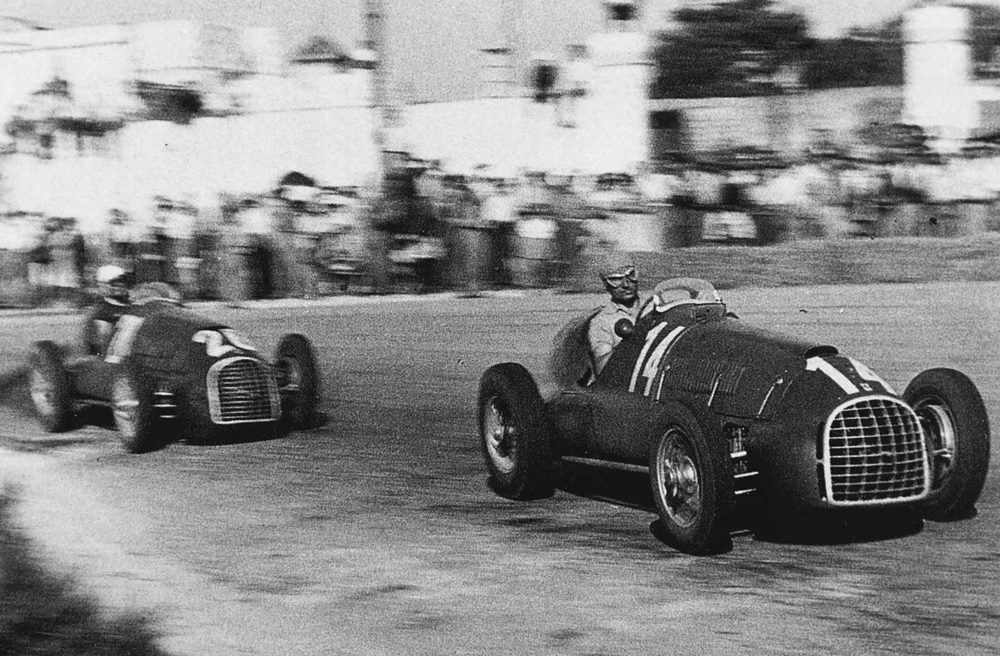
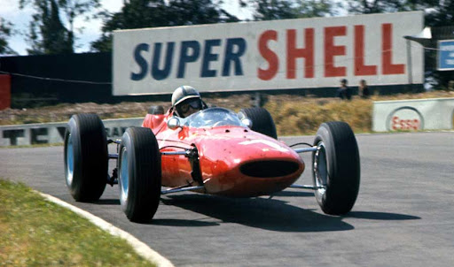
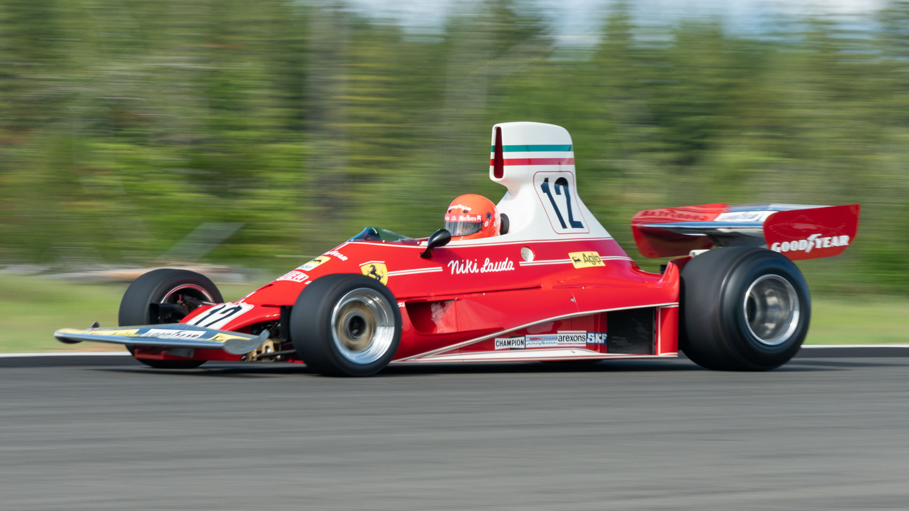
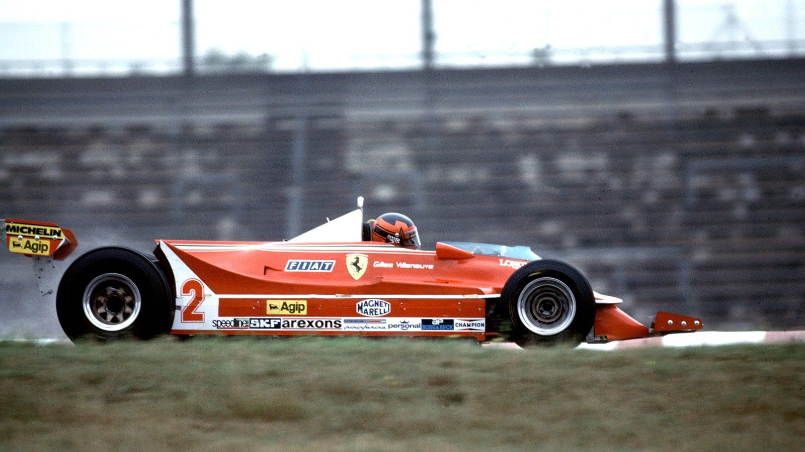
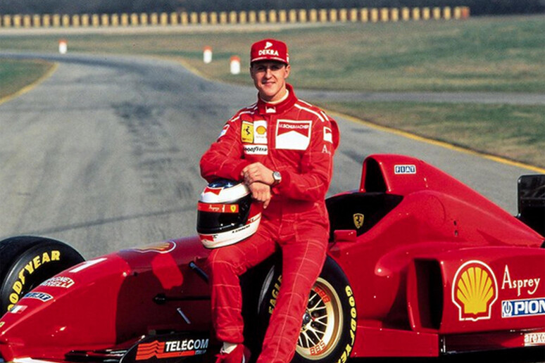
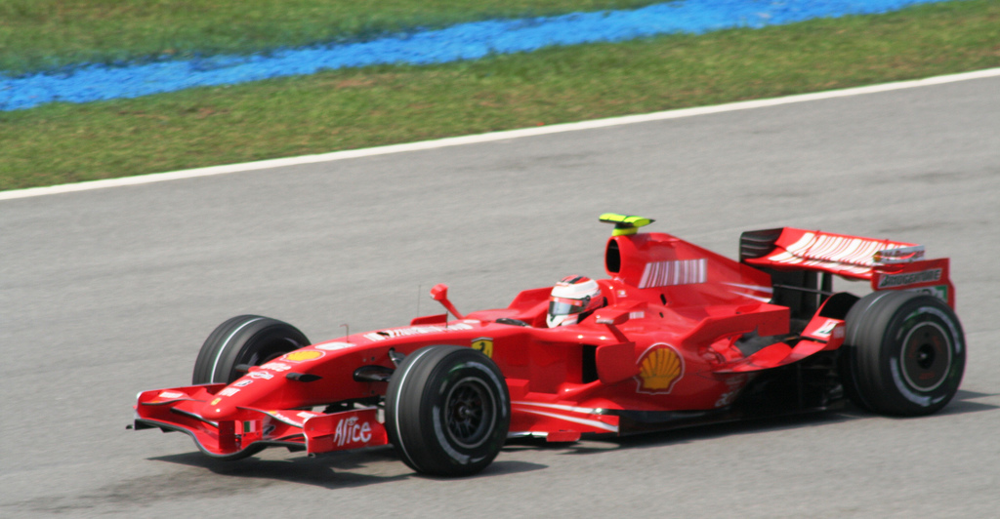

História
1950
A única equipa presente em todas as temporadas. Alberto Ascari tornou-se o primeiro bicampeão da marca (1952-1953).

1960
Esta década marcou a transição definitiva para os motores centrais-traseiros.
John Surtees tornou-se uma lenda absoluta ao conquistar o título mundial de 1964, sendo até hoje o único piloto na história a sagrar-se campeão do mundo em duas e quatro rodas (motos e F1).

1970
Com a chegada do genial Niki Lauda e do revolucionário motor 312T, a Ferrari voltou ao topo do mundo. Lauda conquistou dois títulos mundiais (1975 e 1977), definindo uma era de precisão técnica e coragem inigualáveis em Maranello.

1980
A década de 80 foi marcada pela introdução dos motores turbo e pelo carisma de Gilles Villeneuve. Apesar dos desafios, a Ferrari demonstrou a sua força ao vencer o campeonato mundial de construtores de forma consecutiva em 1982 e 1983.

1990
Após anos de reconstrução, a contratação de Michael Schumacher em 1996 mudou o destino da equipa. Com Jean Todt e Ross Brawn, a Ferrari preparou o caminho para o domínio, vencendo o mundial de construtores em 1999.

2000
Michael Schumacher e a Ferrari reescreveram a história com cinco títulos mundiais de pilotos seguidos (2000-2004). Mais tarde, em 2007, Kimi Räikkönen conquistou o último título de pilotos da equipa até à data, numa final dramática no Brasil.
